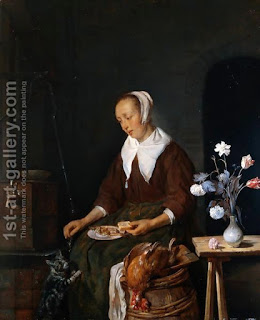

Niddah 11 - Checks
Earlier we said that a woman with a fixed period is presumed ritually pure, and the sacrificial foods that she handled prior to seeing discharged blood are not declared impure retroactively. And yet, even such woman, if she handles ritually pure foods, has to examine herself at regularly scheduled times, morning and evening. The exceptions to this rule are a woman who had a discharge (niddah) and is waiting to become pure by going to a mikvah, and the one who is, on the contrary, pure after having given birth.
Similarly, a woman with a fixed period, if she handles ritual foods, needs to examine herself before and after having relations with her husband. An exception to this rule is a virgin who just married and whose blood is considered pure.
A daughter or a wife of a Kohen has an additional stringency, since she eats the priestly portion (terumah), which requires an additional level of purity. Because of this, she needs an examination at the time they wish to eat terumah. Rabbi Yehudah said, "And also after eating it," to remove the doubt from what is left.
Art: Gabriel Metsu - Woman Eating and Feeding her Cat